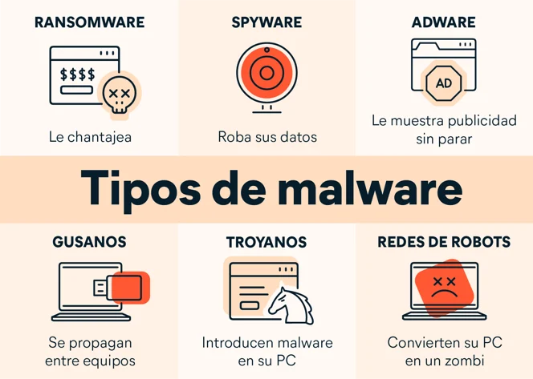

El "software malicioso" es un software, de cualquier tipo, diseñado para dañar una computadora. El software malicioso puede robar datos confidenciales de su computadora, disminuir gradualmente la velocidad de su computadora e incluso enviar correos electrónicos falsos desde su cuenta de correo electrónico sin su conocimiento. A continuación, le presentamos algunos tipos de software malicioso habituales que podría conocer:
El software malicioso puede ingresar a su computadora de distintas maneras. A continuación, le presentamos algunos ejemplos comunes:
El software malicioso puede distribuirse de diversas maneras, pero eso no significa que no pueda impedirlo. Ahora que ya sabe qué es el software malicioso y lo que puede hacer, veamos algunos pasos prácticos que puede seguir para protegerse.
A menudo, Microsoft y Apple lanzan actualizaciones para sus sistemas operativos. Le recomendamos instalarlas cuando estén disponibles para computadoras Windows y Mac. Estas actualizaciones suelen incluir correcciones que pueden mejorar la seguridad de su sistema. Algunos sistemas operativos también ofrecen actualizaciones automáticas, de modo que pueda obtenerlas apenas estén disponibles.
Los usuarios de Windows pueden instalar las actualizaciones mediante una función llamada "Actualización de Windows", mientras que los usuarios de Mac pueden instalarlas con la función "Actualización de software". Si no está familiarizado con estas funciones, le recomendamos que busque más información sobre cómo instalar actualizaciones del sistema en su computadora, en los sitios web de Microsoft y Apple.
Además del sistema operativo, el software de su computadora también debe estar actualizado con las últimas versiones. A menudo, las versiones más nuevas contienen más correcciones de seguridad para evitar ataques de software malicioso.
En el mundo real, probablemente, la mayoría de las personas desconfiaría de entrar a un edificio oscuro con un letrero que dice "Computadoras gratuitas", con luces intermitentes. En la web, debería adoptar un nivel de precaución similar al ingresar a sitios web desconocidos que dicen ofrecer productos gratuitos.
Sabemos que puede ser tentador descargar ese programa gratuito de edición de videos o ese juego de roles, pero, ¿confía realmente en el sitio web que lo ofrece? A veces, es útil salir del sitio web y buscar opiniones o información acerca del sitio web o del programa antes de descargarlo o instalarlo. Una de las principales maneras de recibir software malicioso es a través de las descargas. Por lo tanto, recuerde pensar bien qué está descargando y de dónde lo está descargando.
Si un desconocido le envía una caja de chocolates por correo, ¿la abriría y los comería sin dudarlo? Probablemente, no. De la misma manera, debe tener cuidado si un desconocido le envía un correo electrónico sospechoso con archivos adjuntos o imágenes. A veces, esos correos electrónicos son solo spam. Sin embargo, en otras ocasiones, podrían ocultar software malicioso perjudicial. Si usa Gmail, identifique esos correos electrónicos como spam para que podamos eliminar correos similares en el futuro.
Cuando navega por la Web, es posible que acceda a sitios que muestran ventanas emergentes que lo engañan, ya que le indican que su computadora está infectada y le solicitan que descargue un software para protegerse. No caiga en esta trampa. Cierre la ventana emergente y asegúrese de no hacer clic en ella.
Algunos sitios y algunas aplicaciones le permiten compartir fácilmente archivos con otros usuarios. La mayoría de ellos brinda poca protección contra el software malicioso. Si intercambia o descarga archivos mediante el uso compartido, tenga cuidado con el software malicioso. El software malicioso suele estar oculto, aparenta ser una película, un álbum, un juego o un programa popular.
Si necesita realizar una descarga, le recomendamos que utilice un programa de antivirus para analizarla en busca de software malicioso antes de abrirla. Los software antivirus también le permiten analizar toda su computadora para verificar que no tenga software malicioso. Es una buena idea realizar análisis periódicos de su computadora para encontrar rápidamente software malicioso y evitar que se distribuya.
